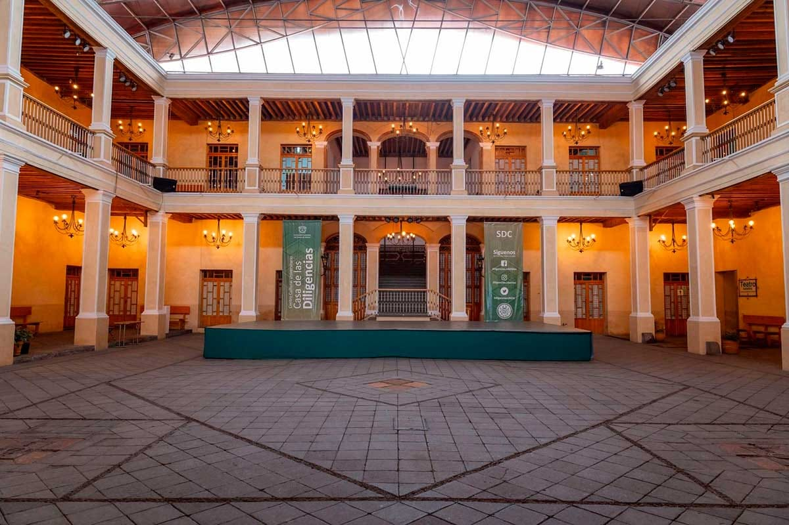
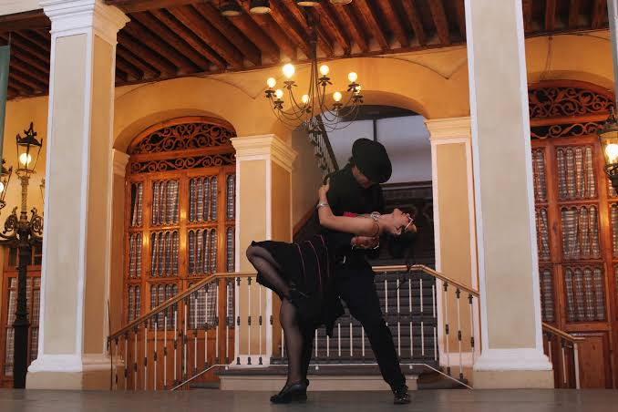

Bienvenidos
La Casa de las Diligencias UAEMéx es un espacio dedicado a la difusión artística y cultural, abierto a toda la comunidad. Aquí se promueve la creatividad, el talento universitario y el compromiso social a través del arte y la cultura.
Talleres Artísticos y Formativos
La Casa de las Diligencias ofrece una variedad de talleres diseñados para fomentar la expresión artística y el desarrollo personal de la comunidad universitaria y del público en general:
- Artes Plásticas: dibujo, pintura y escultura
- Violín y Guitarra: técnica e interpretación musical
- Actuación: expresión escénica, corporal y vocal
- Danza Folclórica: tradiciones mexicanas, fortaleciendo la identidad cultural
Eventos Culturales y Académicos
- Conciertos Didácticos como el de Jazzsontitlán
- Ciclos de Cine Universitario
- Obras de Teatro, desde clásicos hasta contemporáneos
- Actividades Recreativas como yoga y pilates
Exhibiciones y Muestras Artísticas
- Arte Universitario: obras creadas por estudiantes y egresados
- Exposiciones Temáticas como "El origen de la lluvia"
- Coleccionismo y Composición Artística
- Piezas de arte de artistas con estudios profesionales
Bazar de Artesanías y Productos Naturales
- Artesanías mexicanas
- Plantas medicinales
- Productos naturales y locales
Revista sobre el Cuidado del Agua
Una pequeña muestra del tema a modo de revista sobre un tema muy importante en relación con el cuidado del agua.
Ver revistaGalería de Imágenes


